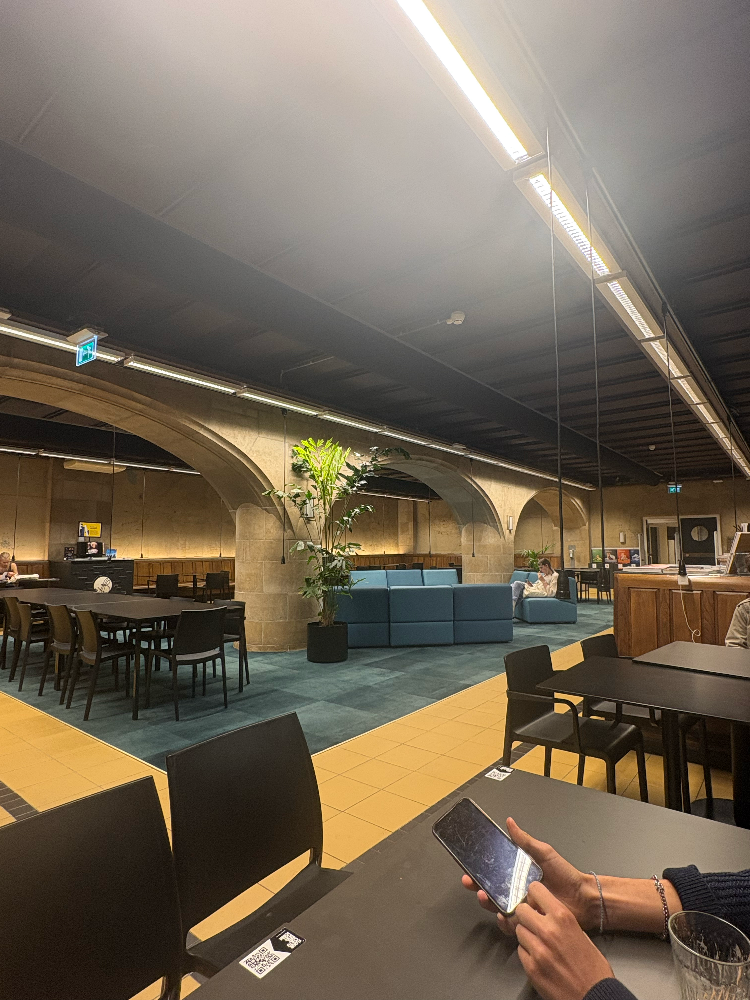
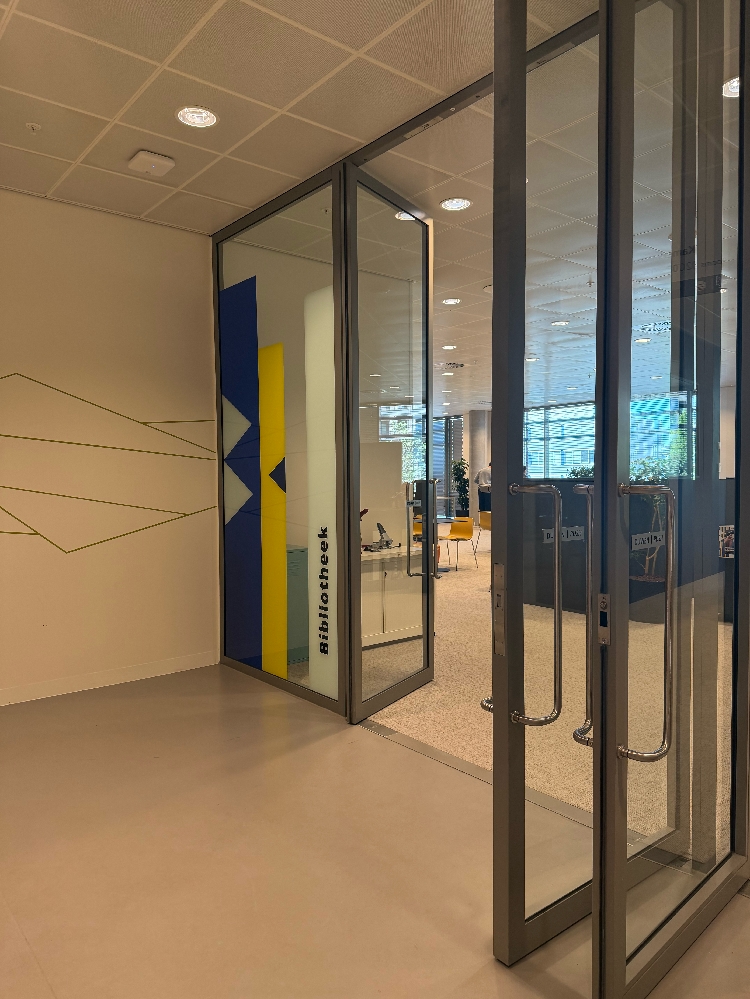
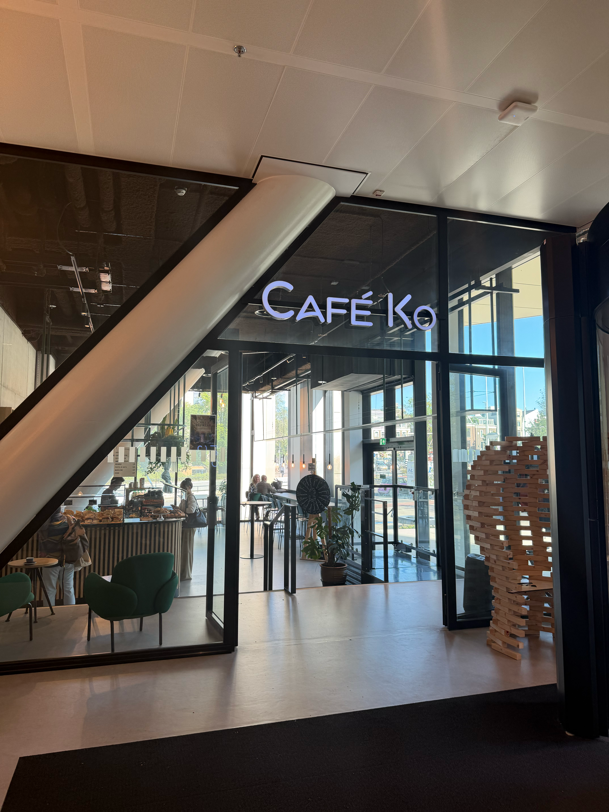

Een open plek op de campus om te chillen, een potje schaak te spelen of gewoon even buiten te zijn.
Schaakplein

rond het Amstelcampus
Een open plek op de campus om te chillen, een potje schaak te spelen of gewoon even buiten te zijn.
Een rustige plek om te werken, studeren of even in een andere omgeving te zitten.

Een rustige plek om te studeren, werken of even te ontsnappen aan de drukte van de campus.

Een fijne spot voor koffie, lunch of om tussen je lessen door even te chillen.

Een handige plek om tussen lessen door iets te eten, koffie te halen of samen te zitten.

Check de stellingkast met Patta-producten en ontdek wat er te vinden is in Wibaut.

Een relaxte plek om buiten te zitten, bij te praten en even pauze te nemen tussen je lessen.

Een gezellige plek voor koffie, een snelle snack of om samen met vrienden te zitten.

Project description
Project description
Project description
Project description